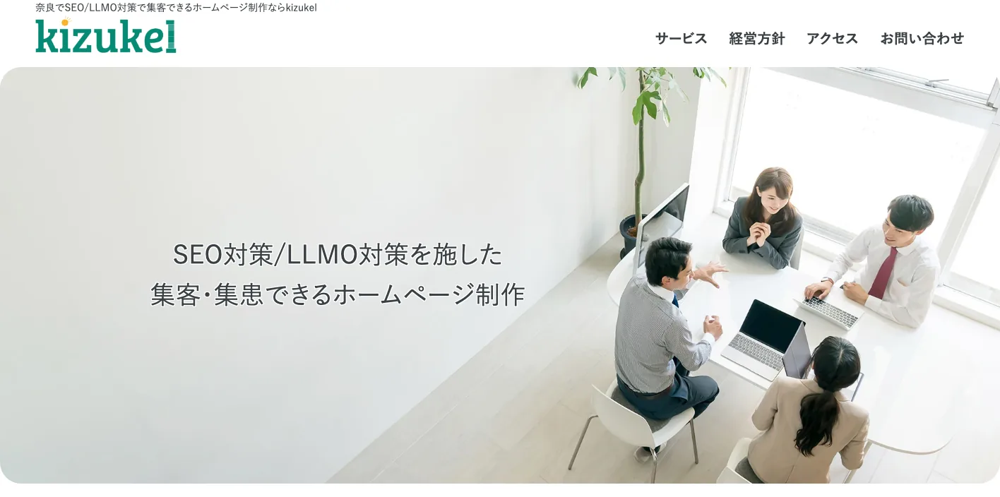
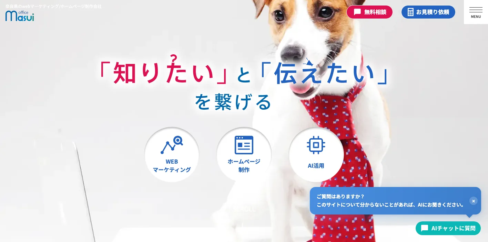
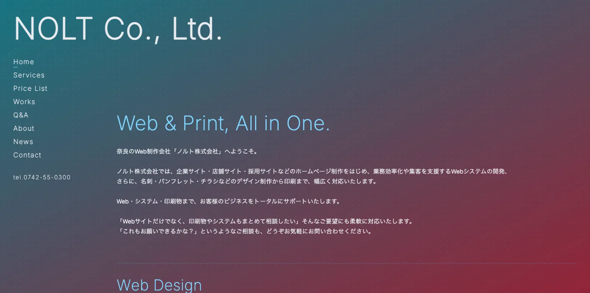
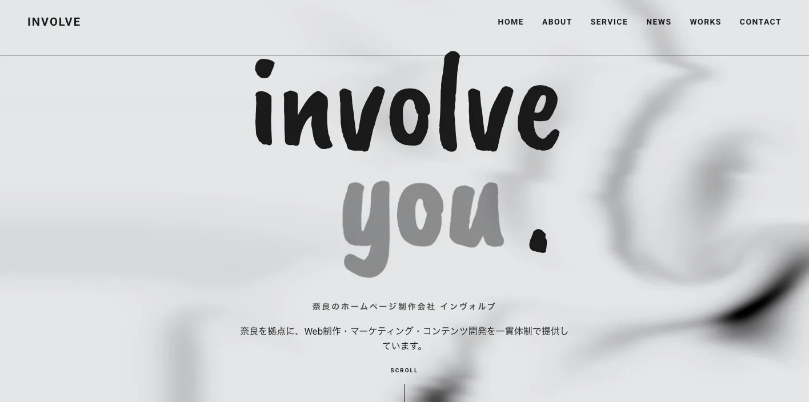
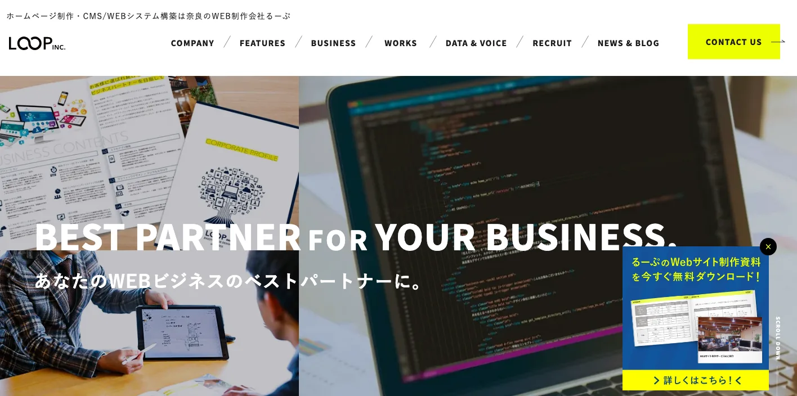
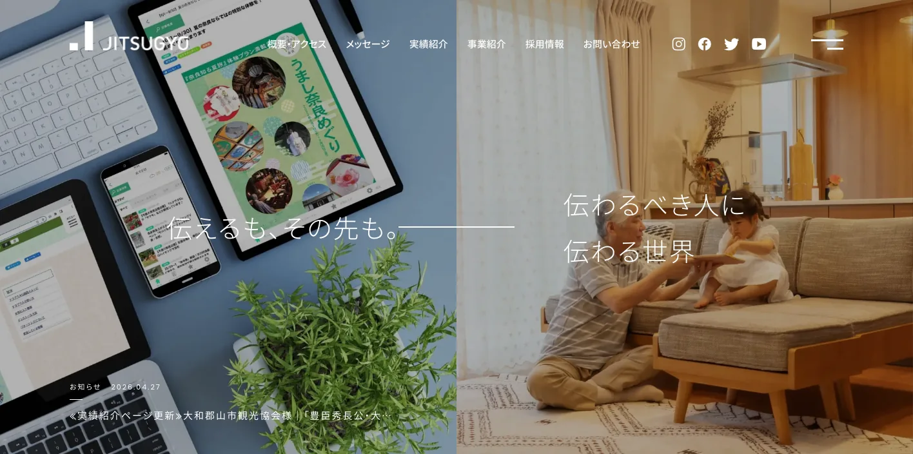
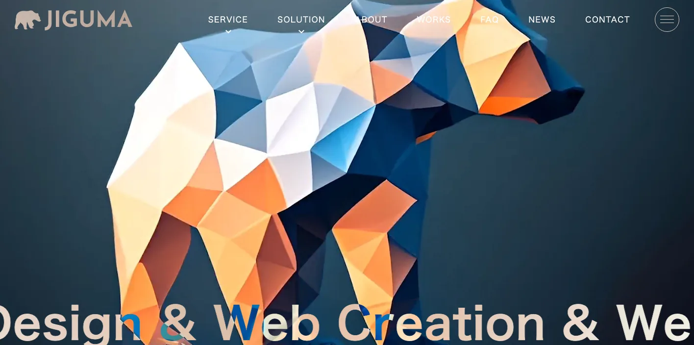
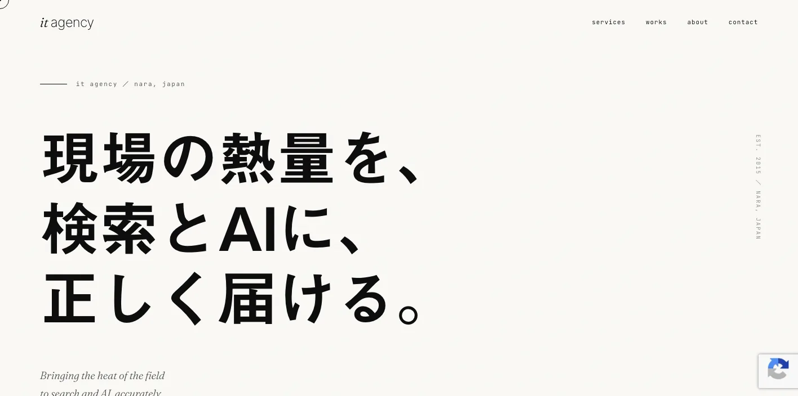
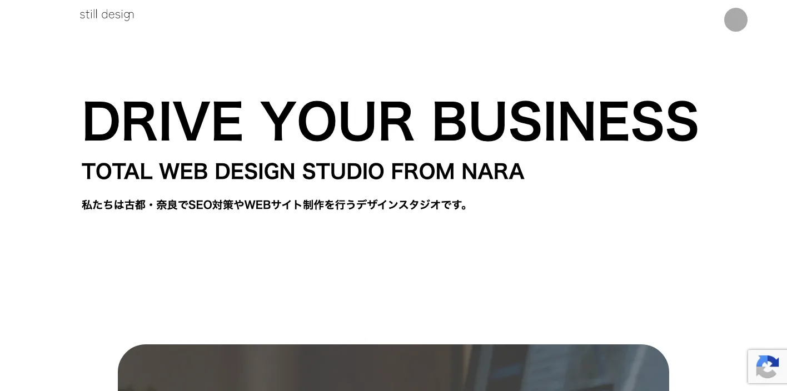

奈良県でおすすめのLLMO会社10選｜費用相場と選び方もわかりやすく解説

奈良県でLLMO会社を選ぶときは、「奈良のホームページ制作会社」だけで探すと判断が荒くなります。奈良市は観光、文化施設、士業、医療、学校、飲食が重なり、生駒市・大和郡山市は大阪近接の住宅・教育・物流商圏、橿原市・大和高田市・桜井市は中南和の生活サービスと専門業、吉野・十津川・天川は観光、宿泊、地域産品の文脈が強くなります。
奈良県の推計人口調査では、令和8年3月1日現在の推計人口が1,269,743人、世帯数が559,780世帯と公表されています。さらに奈良県観光客動態調査では、令和6年の観光客数が4,362万人とされています。人口規模に対して観光接点が大きいため、奈良県のLLMOは地元客向けと観光客向けの質問を分けることが重要です。
この記事では、奈良県でLLMOに取り組むときに比較したい会社、選び方、費用相場をまとめます。基礎から確認したい方はLLMO対策の基礎記事、近隣商圏も比較したい方は兵庫県の比較記事、京都府の比較記事、大阪府の比較記事も参考にしてください。
目次

奈良県でおすすめのLLMO会社10選
今回は、奈良県内に拠点や強い対応実績があり、Web制作、SEO、Webマーケティング、AIO/LLMO、MEO、コンテンツ制作、広告、採用広報などの公開情報を確認しやすい会社を中心に選びました。奈良県内で「LLMO専業」と明記している会社はまだ多くないため、AIに引用されやすい一次情報づくり、構造化データ、FAQ、SEO、取材、更新運用まで広げて支援できるかを見ています。
奈良県では、奈良市の観光・文化・士業・医療、生駒市や大和郡山市の大阪近接商圏、橿原市・大和高田市・桜井市の中南和、吉野・十津川・洞川温泉の広域観光で、検索される言葉がかなり変わります。まずは下の表で、自社の地域と目的に近い会社を絞ってください。
| 会社名 | 拠点・対応 | 向いている相談 |
|---|---|---|
| 合同会社kizukel | 奈良市 | LLMO対応のホームページ制作、SEO、MEO、Webコンサルティング |
| 株式会社office masui | 奈良市 | Webマーケティング、AIO/SEO/MEO、AIチャットボット、広告運用 |
| ノルト株式会社 | 奈良市 | Web制作、Webシステム、保守運用、印刷物まで一体設計 |
| インヴォルブ | 橿原市 | Web制作、SEO、広告、アクセス解析、写真・動画、観光/文化案件 |
| 株式会社るーぷ | 奈良市 | Web制作、CMS/システム、Webコンサル、SEO、運用改善 |
| 株式会社JITSUGYO | 奈良市 | 広告、取材編集、Web制作、採用支援、電子ブック、動画制作 |
| JIGUMA | 奈良県拠点 | Web制作、SEO、Webマーケティング、広告、コンテンツ改善 |
| IT Agency | 橿原市 | 検索とAIを意識したマーケティング、SEO/MEO、Web制作 |
| still design | 奈良・関西/全国対応 | SEOに強いWeb制作、テクニカルSEO、WordPress、記事制作 |
| 株式会社LiKG | 全国対応 | LLMOコンサルティング、SEO連動、記事制作、AI検索対策 |
株式会社AIMAは奈良県内の会社ではありませんが、全国対応でLLMO支援を提供しています。月額5万円のLLMO支援は初期費用なし・1ヶ月単位で始められ、質問設計、記事制作、引用チェックに絞って実務を進められます。奈良市、橿原市、生駒市、大和郡山市、大和高田市、桜井市、五條市、吉野町のように商圏が分かれる場合も、まず無料LLMO診断で優先順位を確認できます。
合同会社kizukel

合同会社kizukelは、奈良市を拠点に、SEO/LLMO対策を施したホームページ制作、MEO対策、Webコンサルティングを掲げる会社です。奈良県内でLLMOという言葉を明確に出している点は、比較検討の入り口として見やすいポイントです。
飲食店、クリニック、工務店、士業、整体院など、地域名とサービス名で探される事業では、Google検索だけでなくAI回答でも「どこにあるか」「何が強いか」「どんな人に合うか」が問われます。kizukelはSEOとMEOを含めて相談しやすいため、奈良市内のローカルビジネスが最初にWeb集客の土台を作るときに候補になります。
株式会社office masui

株式会社office masuiは、奈良市のWebマーケティング/ホームページ制作会社です。公式サイトでは、Webマーケティング、ホームページ制作、AI活用、EC、広告運用、SEOコンサルティング、AIO・SEO・MEO対策、AIチャットボット導入などを案内しています。
奈良県の中小企業がLLMOに取り組む場合、記事だけでなく「既存サイトに何が足りないか」を見る力が必要です。office masuiはWeb集客を中心に、AI活用や運用まで範囲を広げているため、奈良市・大和郡山市・生駒市の店舗、医療福祉、住宅、EC、教育事業者が、検索流入とAI検索の両方を整理したいときに向いています。
ノルト株式会社

ノルト株式会社は、奈良市大宮町にあるWeb制作会社です。企業サイト、店舗サイト、採用サイトなどのホームページ制作、Webシステム開発、保守運用、名刺・パンフレット・チラシなどの印刷物制作まで幅広く対応しています。
奈良県では、Webだけでなく紙の営業資料、パンフレット、会社案内を使っている企業も多くあります。LLMOでは、紙にしか載っていない強みや事例をWeb上の一次情報として整えることが重要です。ノルト株式会社はWebと印刷物の一体設計を相談しやすいため、奈良市周辺のBtoB企業、店舗、採用サイトを整えたい企業に合います。
インヴォルブ

インヴォルブは、奈良県橿原市を拠点に、Web制作、マーケティング、コンテンツ開発を一貫体制で提供する制作会社です。公式サイトでは、SEO、広告運用、アクセス解析、ライティング、コンテンツ企画、EC、写真・動画制作などを案内しています。
橿原市、桜井市、大和高田市、香芝市、葛城市などの中南和では、奈良市中心部とは違い、生活商圏、医療、住宅、教育、製造、観光が混ざります。インヴォルブは文化・観光系の制作実績も確認できるため、寺社仏閣、観光、地域イベント、店舗、サービス業が「伝え方」と「集客」を同時に見直したいときに候補になります。
株式会社るーぷ

株式会社るーぷは、奈良のWeb制作・CMS/WEBシステム構築会社です。公式サイトでは、Webサイト制作、更新管理、Webコンサルティング、スマートフォンアプリ、グラフィックデザインなどを案内し、Web制作ではSEO対策やCMS構築、コンテンツ制作も説明しています。
LLMOでは、更新できないホームページよりも、事例、FAQ、ニュース、採用情報を継続して追加できるサイトのほうが強くなります。株式会社るーぷはCMSやWebシステムまで相談しやすいため、奈良県内で実績や商品情報を増やしていきたい企業、予約・問い合わせ・会員機能などを含めて改善したい企業に向いています。
株式会社JITSUGYO

株式会社JITSUGYOは、奈良市東九条町に本社を置く広告会社です。企画、デザイン、取材、編集、印刷、広告、Webサイト制作、電子ブックポータル「nara ebooks」、動画制作、採用支援などを提供しています。
奈良県のLLMOでは、観光、自治体、学校、医療、メーカー、地場産品のように、地域の文脈を正しく言語化する力が重要です。JITSUGYOは取材編集や紙媒体、動画、電子ブックまで扱うため、既存パンフレット、観光資料、採用資料をWebに展開し、AIに引用される情報へ整えたい場合に候補になります。
JIGUMA

JIGUMAは、奈良県を拠点に、ホームページ制作、Webサイト制作、SEO対策、Webマーケティングを行う制作パートナーです。公式サイトでは、サイト設計、デザイン、内部SEO、アクセス解析、ランディングページ、オウンドメディア制作などを案内しています。
LLMOの入口は「AIに出たい」ですが、実務ではサイト構造、見出し、メタ情報、FAQ、実績、コンテンツ更新が関わります。JIGUMAは制作とWebマーケティングを一体で見られるため、奈良県内で既存サイトを作り直し、検索にもAIにも伝わる構成へ改善したい中小企業に向いています。
IT Agency

IT Agencyは、奈良県橿原市を拠点に、マーケティングとクリエイティブ制作を支援するパートナーです。公式サイトでは「検索とAIで第一想起をつくる」考え方を掲げ、コンテンツSEO制作、SEO/MEO、ITコンサルティング、Web制作などを案内しています。
奈良県では、学習塾、クリニック、士業、住宅、店舗、地域サービスのように、近隣比較で選ばれる業種が多くあります。IT Agencyは検索とAIをまたいだ見せ方を打ち出しているため、橿原・中南和エリアで「地域名＋悩み」「地域名＋おすすめ」に強い導線を作りたい事業者に向いています。
still design

still designは、奈良・大阪・三重・滋賀・和歌山・京都など関西を中心に、全国対応するWeb制作パートナーです。公式サイトでは、SEOに強いWeb制作、テクニカルSEO、記事ライティング、WordPressやSTUDIOを使ったCMS構築などを案内しています。
LLMOでは、見た目だけでなく、ページの読み取りやすさ、構造、情報の粒度が問われます。still designはSEOやテクニカル領域を前面に出しているため、既存サイトの中身を整理し、AIが参照しやすいページ構造に変えたい企業に向いています。奈良県内でも、専門性の高いBtoB、士業、医療、教育、採用ページの改善で検討しやすい会社です。
株式会社LiKG

株式会社LiKGは、全国対応のLLMOコンサルティング会社です。専任のLLMOコンサルタントがプロジェクトを設計し、SEOと連動したAI検索対策、記事制作、サイト改善を支援しています。
奈良県内の地域情報や撮影は地元会社に依頼し、LLMOの診断、質問設計、記事構成、引用状況の確認は専門会社に依頼する分担も有効です。特に奈良市の観光、医療、教育、BtoB、複数拠点事業のように、AI上での見え方を定期的に確認したい場合は、全国対応の専門会社を比較に入れる価値があります。
奈良県のLLMO会社を比較する際のポイント
ここでは、会社一覧とは別に、奈良県でLLMO会社を選ぶときの見方を整理します。ポイントは、奈良県を一つの商圏として扱わないことです。奈良市、生駒・大和郡山、橿原・中南和、吉野・奥大和では、AIに聞かれる質問も、必要なページも変わります。
奈良市は観光・文化・生活サービスの質問を分ける
奈良市は、東大寺、春日大社、奈良公園、ならまち、奈良国立博物館などの観光文脈と、医療、士業、学校、飲食、美容、住宅、店舗の生活商圏が重なります。観光客向けの質問では「アクセス」「所要時間」「周辺でできること」「予約」「混雑」「子ども連れ」「雨の日」が出やすく、地域住民向けの質問では「料金」「通いやすさ」「口コミ」「駐車場」「土日対応」が出やすくなります。
そのため、奈良市の会社を比較するときは、単にきれいなサイトを作れるかではなく、観光客向けFAQと地元客向けFAQを分けて設計できるかを見てください。AIは曖昧な宣伝文より、具体的な条件、対象者、対応範囲、更新日を好みます。
生駒・大和郡山は大阪近接商圏と県内商圏を分ける
生駒市、大和郡山市、奈良市西部は、大阪への通勤・通学、住宅地、教育、医療、物流、工業団地などが絡みます。AIに聞かれる質問も、「奈良県内で探す」だけでなく「大阪から通える」「近鉄沿線」「車で行ける」「奈良と大阪のどちらが便利か」のように比較型になりやすいです。
この地域では、商圏を奈良県内だけに閉じない会社が合います。大阪府の比較も見たい場合は、近隣記事の大阪府でおすすめのLLMO会社10選も参考になります。LLMO会社には、地名の出し分け、路線、駐車場、対応エリア、法人向け導線まで整理できるかを確認しましょう。
橿原・大和高田・桜井は中南和の生活導線と専門性を出す
橿原市、大和高田市、桜井市、香芝市、葛城市、御所市、高取町、明日香村周辺では、医療、介護、教育、住宅、地域店舗、製造業、観光資源が混在します。奈良市のような大規模観光だけでなく、日常利用と専門サービスの比較が多くなる地域です。
この地域では、会社概要やサービスページに「誰向けか」「どの地域から来る人が多いか」「どんな悩みを解決するか」を細かく出すことが重要です。AIは、市町村名、駅名、診療科、工法、対応素材、相談内容など、具体語の組み合わせで回答を作ります。抽象的な「地域密着」だけでは足りません。
吉野・奥大和・洞川温泉は季節性とアクセス情報を一次情報化する
吉野山、天川村、洞川温泉、十津川村、下北山村、上北山村などでは、観光、宿泊、林業、アウトドア、道の駅、地場産品の情報が重要になります。AIに聞かれる質問は「桜の時期」「紅葉」「雪道」「公共交通で行けるか」「日帰りできるか」「子ども連れ」「温泉」「周辺観光」など、季節と移動条件が中心です。
この地域の事業者は、営業日、料金、駐車場、送迎、予約、キャンセル、周辺の所要時間、悪天候時の注意点をWebに出すだけで、AIが回答に使える材料が増えます。LLMO会社を選ぶときは、観光パンフレットをそのまま写すのではなく、旅行者がAIに聞く形へ直せるかを見ましょう。
製造業・BtoBは設備、加工範囲、事例を公開できるかを見る
奈良県には、食料品、プラスチック、医薬品、機械、金属加工、繊維、木材、地場産業など、BtoBの情報整理が必要な会社もあります。BtoBのLLMOでは「どの会社がおすすめか」よりも、「この加工に対応できる会社はどこか」「小ロット対応できるか」「品質管理はどうか」「納期はどれくらいか」といった実務的な質問が増えます。
比較する会社には、設備一覧、加工範囲、対応素材、実績、取引業界、品質保証、検査体制、よくある相談をページ化できるか確認してください。営業資料や口頭説明に閉じている情報をWebに出すだけで、AIに参照される可能性が上がります。
奈良県のLLMO会社に依頼する費用相場
奈良県でLLMOを依頼する費用は、何をどこまで頼むかで大きく変わります。小さく始めるなら診断や記事改善から、本格的に進めるならサイト構造、会社概要、サービスページ、FAQ、実績、写真、動画、採用ページまで含めて考えます。
無料〜10万円：診断、簡易調査、優先順位づけ
最初の段階では、AIに自社名やサービス名を聞いたときにどう出るか、競合がどのように表示されるか、公式サイトの情報が足りているかを確認します。奈良市の店舗やクリニックなら、Googleマップ、公式サイト、口コミ、FAQの整合性を見るだけでも改善点が見つかります。
この価格帯は、すぐに記事を大量に作るのではなく、どの質問で出たいかを決める段階です。AIMAの無料LLMO診断のような入口を使い、奈良県内の商圏、競合、既存サイトの弱点を整理してから次の費用を判断すると無駄が減ります。
月5万〜15万円：記事制作、FAQ整備、既存ページ改善
月5万〜15万円の範囲では、既存ページの改善、FAQ追加、コラム制作、会社情報の整備、内部リンク、簡単な構造化データ対応などが中心になります。奈良県内の小規模事業者、士業、医療、教育、店舗、宿泊施設なら、まずこの価格帯から始めるケースが現実的です。
ただし、奈良県は観光地名や市町村名が多いため、記事数を増やすだけでは薄くなります。奈良市、橿原、吉野、生駒のように地域別の質問を分け、既存のサービスページとつなげる設計が必要です。安く始める場合でも、毎月どのページを直すかを決めておきましょう。
月15万〜30万円：SEO、MEO、LLMO、広告をまとめて改善
月15万〜30万円になると、SEO、MEO、LLMO、広告、アクセス解析、競合調査、コンテンツ改善を一体で進めやすくなります。奈良県内で複数店舗を持つ会社、採用に困っている会社、観光・宿泊・医療・住宅など競争が強い業種では、この価格帯のほうが進めやすいことがあります。
この段階では、AI回答だけを見ても足りません。問い合わせ数、予約数、資料請求、採用応募、検索流入、マップ経由の来店などを一緒に見ます。奈良県内では商圏が狭い分、問い合わせの質まで確認しないと、記事制作だけで終わってしまいます。
30万円〜数百万円：サイト制作、写真動画、システム、採用ページまで含む場合
ホームページを作り直す、写真撮影や動画制作を入れる、ECや予約システムを組む、採用サイトを作る、観光コンテンツを多言語化する場合は、初期費用が30万円から数百万円になることがあります。奈良県では、宿泊施設、観光施設、製造業、医療法人、学校、自治体関連の情報発信でこの規模になりやすいです。
費用が大きい場合は、LLMOだけで発注しないほうが安全です。サイトの目的、必要なページ、撮影範囲、更新担当、公開後の運用、AI検索で狙う質問を先に決めてください。見積もりでは、記事本数よりも「どの一次情報を作るか」を見るのが重要です。
奈良県のLLMO会社に関するよくある質問
奈良県内の会社に依頼したほうがいいですか？
奈良県内の商圏理解、取材、写真撮影、寺社仏閣や観光事業者との調整が必要なら県内会社は強いです。一方で、AI検索への引用設計、FAQ設計、構造化データ、記事改善を短期間で進めたい場合は、県外のLLMO専門会社を組み合わせる選択も現実的です。
奈良市と橿原市ではLLMOの進め方は変わりますか？
変わります。奈良市は観光、文化施設、学校、士業、医療、店舗の比較質問が多く、橿原市や中南和は住宅、医療、製造、採用、生活商圏の質問が増えます。同じ奈良県でも、AIに聞かれる言葉を地域ごとに分ける必要があります。
観光業でもLLMOは必要ですか？
必要です。奈良公園、東大寺、春日大社、法隆寺、飛鳥、吉野、洞川温泉のように、目的地ごとに「行き方」「所要時間」「混雑」「周辺でできること」が聞かれます。公式サイト側で最新情報、FAQ、料金、アクセス、予約条件を整理すると、AI回答に拾われやすくなります。
製造業やBtoB企業にも効果がありますか？
あります。大和郡山、橿原、御所、五條などの製造業では、製品名、加工技術、対応ロット、品質管理、納期、事例、設備情報を整理することで、AIが比較回答を作るときの材料になります。営業資料にしかない情報をWeb化することが重要です。
MEO対策とLLMO対策は何が違いますか？
MEOはGoogleマップで見つけてもらう対策です。LLMOはChatGPTやAI Overviewなどの回答で、自社情報を正しく引用・参照してもらう対策です。奈良の店舗、クリニック、宿泊施設はMEOとLLMOを分けず、営業時間、対応エリア、強み、FAQを同じ一次情報として整えるのが効率的です。
記事制作だけ依頼すれば十分ですか？
記事だけでは不十分なことが多いです。AIは会社概要、サービスページ、実績、料金、FAQ、著者情報、問い合わせ導線などを横断して判断します。記事制作に加えて、既存ページの構造、内部リンク、更新ルールまで見直す必要があります。
奈良県のLLMO対策の費用はどれくらいですか？
小さく始めるなら月5万〜15万円、本格的に改善するなら月15万〜30万円以上が目安です。Webサイトの作り直し、写真撮影、動画、EC、予約システム、採用ページ制作まで含めると、初期費用が数十万円から数百万円になることもあります。
最初に何を相談すればいいですか？
まず「AIに何と聞かれたときに出たいか」を10個書き出すのがおすすめです。奈良市の観光、橿原の医療、吉野の宿泊、大和郡山の製造業など、地域と質問をセットで整理すると、必要なページやFAQが見えやすくなります。
奈良県でLLMO会社を選ぶなら、観光地名と生活商圏を同じページに詰め込まないことが重要です
奈良県でLLMO会社を選ぶときは、奈良市の観光、奈良市・生駒・大和郡山の生活商圏、橿原・大和高田・桜井の中南和、吉野・奥大和の観光と地場産業を分けて考える必要があります。AIは、地域名、目的、条件、比較軸が具体的なほど回答を作りやすくなります。
まずは、自社がAIに聞かれたい質問を10個書き出してください。次に、その質問に答える公式ページ、FAQ、実績、料金、会社概要、写真、アクセス情報があるかを確認します。足りない部分が多ければWeb制作や取材に強い会社、すでにサイトがあるならSEO/LLMO改善に強い会社を選ぶのが現実的です。
奈良県内の会社だけで完結する必要はありません。地域取材や撮影は地元会社、LLMO診断や記事改善は専門会社という分担もできます。小さく始めたい場合は、AIMAのLLMO支援サービスや無料診断も使い、どの質問から対策すべきかを先に整理してください。